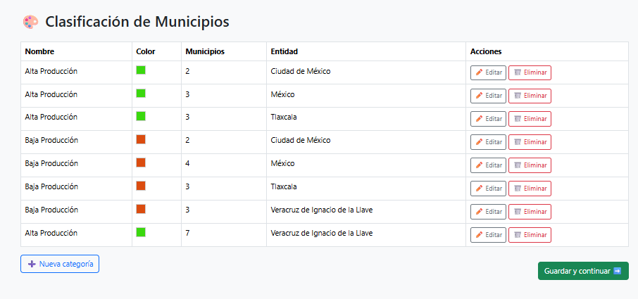

INTELIGENCIA
ESPACIAL A LA MEDIDA
Transformamos tus datos geográficos en plataformas interactivas. Soluciones SIG personalizadas para tomar decisiones estratégicas en tiempo real.
TU OPERACIÓN, TU PLATAFORMA
No te adaptes a un software genérico de caja. En Geoaxis analizamos tus flujos de trabajo y construimos arquitecturas de datos espaciales exclusivas para tu empresa.
Geodatabases
Estructuración, limpieza y migración de tus datos históricos a bases de datos espaciales centralizadas y seguras.
Dashboards Web
Tableros de control interactivos. Visualiza el avance de tus obras, inventarios y KPIs georreferenciados desde cualquier navegador.
Análisis Espacial
Geoprocesamiento avanzado para selección de sitios, análisis de riesgos, cuencas visuales y optimización de rutas.
Cartografía automatizada al instante
Olvídate de las horas invertidas configurando retículas, membretes y escalas. QuickMap es nuestra aplicación propietaria diseñada para generar mapas estandarizados listos para impresión o entrega en cuestión de segundos.
- Plantillas corporativas personalizables.
- Exportación por lotes en alta resolución.
- Conexión directa a tus capas vectoriales.
